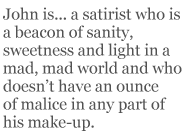

John Whitworth first swam into my ken in the mid-1980’s when, together with the teetotal Irish poet Dennis O’Driscoll, I was co-judging the Poetry Society’s Alice Hunt Bartlett prize for first volumes. There were cracking on for a hundred entries and our unanimous decision was to award the prize to John Whitworth for his volume Unhistorical Fragments published by Secker & Warburg. Howard the Humourless (Sergeant) wrote a letter complaining that we had chosen a work of pornography.
Secker went on to publish John’s second and third volumes before abandoning him along with the rest of their poetry list. Ever the snapper-up of unconsidered trifles, I brought out John’s fourth volume Tennis And Sex And Death (1989) in my Peterloo series. (What a Betjemanian Holy Trinity of nouns rang out like belles in its title!) The final poem in that collection deserves quotation in full as both a corrective to overweening pride in publishers and asignal that even cuddly teddy bears can bite.
They Fuck You Up, Do Publishers
(A Farewell to Secker and Warburg)
“I would not part acrimoniously from the publishers who brought out three books for me. Let me dedicate to them the following verses.”
John Whitworth, TLS July 29 — August 4 1988
They fuck you up, do publishers.
Against them there is no defence.
No letter, postcard, phone-call stirs
The puddle of their indolence.
Each author’s fucked up in his turn.
Each contract is a poison pellet.
And specially poets must learn
That verse don’t sell, and they don’t sell it.
Man hands on manuscript to man,
Who leaves the thing in St Tropez.
Get out as quickly as you can
And write a television play.
As a publisher of poetry, I have for a long time identified — blasphemously almost — with the Pope of “An Epistle to Dr. Arbuthnot” and, when giving talks, usually quote the opening lines:
Shut, shut the door, good John! fatigu’d I said,
Tye up the knocker, say I’m sick, I’m dead,
The Dog-star rages! nay ’tis past a doubt,
All Bedlam, or Parnassus, is let out:
Fire in each eye, and Papers in each hand,
They rave, recite, and madden round the land.
Then I follow this — in the interests of giving a BBC-like balanced view of things — by quoting John’s “They Fuck You Up Do Publishers”. John is very much the Pope de nos jours: a satirist who is a beacon of sanity, sweetness and light in a mad, mad world and who doesn’t have an ounce of malice in any part of his make-up. I warm to his view of poets and poetry, especially as expressed in this from “I Too Dislike It”, also in Tennis And Sex And Death:
A poet isn’t just a Walter Mitty,
Who finds truth at the bottom of a flagon.
Depressive, drunken Thomson wrote The City
Of Dreadful Night when he was on the wagon.
Coleridge took opium. Yes, and more’s the pity.
D’you think it freed him? No. It just put a gag on.
Poets go mad like poor John Clare as, say,
A banker or a bus-conductor may.
John is also extremely well-read and a master of verse forms, as both the light nod to Marianne Moore in the title of the just-quoted poem and its stanza form — that of Byron’s “Don Juan” — indicate. His wit is often throwaway, his learning lightly worn. Witness the duet sung by Walt Whitman and Emily Dickinson which concludes “American Pie (Cantata for Two Voices)”, the opening poem of his volume From the Sonnet History of Modern Poetry (Peterloo, 1999), a volume that is illustrated by Gerald Mangan’s fine, satiric line drawings of a variety of poets including Eliot, Auden, Dylan Thomas, Stevie Smith, Betjeman, Ted Hughes, Sylvia Plath, Larkin, Seamus Heaney and Simon Armitage.
DUET:
We are the People, following the sun,
We are the Gods, electric with creating,
The Brooklyn bounder and the Amherst nun,
New ways of seeing, being — punctuating —
We are the stars of hope, the stripes of sorrow,
We are America. We are tomorrow.
What a wonderfully metaphysical (but unviolent) yoking-together of poetic polar opposites. The Honest Ulsterman review of this volume described it as “a poetry book that’s needed to keep poets sane, to keep them out of pubs, a book to keep some poets from going to church and to prevent others from starting up a new religion”. Too late to reform Dylan Thomas, of course:
Roaring Forties
Who won the war? The bloody Yanks, but never
Poor bloody us, no strut, no style, no cash,
Just power cuts, ration-books and queues forever.
But Art it free and Art should make a splash.
We want extravagance and ormolu,
Black market nylons, marzipan and waste.
Great God! We’ve had enough of making do,
High mindedness and horrible good taste.
We’ve had enough of the austerely English.
We want the vatic chant, the Celtic mist,
Poems that leave you out-of-breath and tinglish,
Poems that leave you feeling slightly pissed.
The Zeitgeist labours with ecstatic cries,
And Dylan Thomas squalls between her thighs.
A feature of all Whitworth’s volumes is the manic, bravura brio of his rhyming. This aspect may have been re-inforced by the Whitworth family moving to Scotland (Edinburgh) from the Home Counties (Metroland) in 1955 when John was 10. It was a severe culture shock for John and one that he chronicles in Landscape With Small Humans (Peterloo, 1993). My example comes from “A Word on Bullying”:
Be nice to people; they’ll be nice to you —
My English lesson but it isn’t true.
Better to learn the butcher-bird, the Shrike
That sticks his enemies on a spike,
Better to learn pre-emptive counterstrike
And love your enemies as I love mine:
I treasure him, my own, my Valentine,
Valentine Tudball — this exultant Jock
With the amazing handle, thought to mock
My name, and turn me into a laughing-stock.
Why did he? Why? You snivelling hypocrite,
Because he could. Eh Whitworth? Worth a wit?
Eh Shitworth? Worth Shit all? Bang on, sweet slanger,
My handsome Valentine, my bold haranguer,
My stormtroop darling and my doppel-ganger.
So much for Whitworth the Holy Ghost of poetry past (Pope, Byron, Larkin and even Pushkin) and poetry present. I would now like to turn to Whitworth the Father and Whitworth the Son. He is a poet of both familial and filial pieties and his oeuvre contains many poems of great tenderness of feeling. I take my first example from the sequence “Poems For A Very Small Daughter” in Tennis and Sex and Death. In “The Things” he considers and lists “Some of the things our daughter’s got”. They include a ball, a matchbox, an engraved brass bell, a tower, a tube that held a fat cigar, two ducks, three rattles and a Hong Kong car. But, for my Down Under audience, I’ll quote this stanza:
“She’s got an orange knitted cat
Which is perhaps a kangaroo.
Opinions differ as to that.
One must suppose the knitter knew.”
That section of the sequence comes to rest with this observation:
“What life in lists inheres — the names
Of wild flowers, railway stations, kings
And queens of England, children’s games,
Dead poets. And our daughter’s things.”
The eighth poem in this ten poem sequence, “A Birthday Present” is in the tradition of “A Prayer For My Daughter (Yeats) and “Born Yesterday” (Larkin) and is a worthy addition to the genre:
Be speculative, dreamy, kind,
Impractical. Don’t speak your mind.
For your opinions, hold as few
As it seems reasonable to do.
Hold them but do not be afraid
To bury them when they are dead.
Don’t pick your friends with too much care,
But such as happen to be there.
Trust — if you must — a pretty face.
There lies disaster, not disgrace.
***
Tolerate spiders, snakes and bats.
Be on the best of terms with cats.
Love gardens, garlic, sunset, lambs,
Church weddings, babies in their prams,
Fairgrounds and Mozart, Keats and … oh dear,
I said I wouldn’t and there I go, dear.
It’s only daddy rabbitting.
Same old daddy, same old thing.
My love, if you contrive to be
Just what you please, that pleases me.
The final two poems in Landscape With Small Humans are about the death of John Whitworth’s mother and are unbearably, nakedly moving:
Bess who had laughed and talked and smoked as late as
Twenty past two on Sunday afternoon,
Now emptied into absence, a hiatus
As uninhabitable as the Moon,
Something connected up to apparatus.
As a stanza from “I Too Dislike It” in Tennis And Sex And Death (where John is responding to Vikram Seth’s verse novel that he hadn’t expected to like) puts it:
The Golden Gate is wise and witty, sane
And sad (who can be otherwise than thus
In this sad world?) good-tempered and urbane.
His San Francisco yuppies, just like us,
Are struck with sudden joy and suffer pain,
Jogging along from birth to terminus,
Doing their best to keep it all together,
Though rather better off, in better weather.
This is typical of the generosity of spirit and philosophy of life of John Whitworth, one of the best of England’s living poets, whose volumes deserve to sell far better than they actually do.
Harry Chambers (Publishing Director, Peterloo Poets), St Tropez (I wish), September 2008
Harry Chambers originally trained and worked as a teacher, and also a teacher-trainer. In the 1960s and 1970s he was active in publishing and promoting new UK poets in the journals he edited and the “pamphlet” (chapbook) series he produced. For the past thirty years he has run Peterloo Poets, publishing a substantial list of British and Irish poets, including John Whitworth since 1989. He has also published poets from the USA, Canada and the Caribbean.